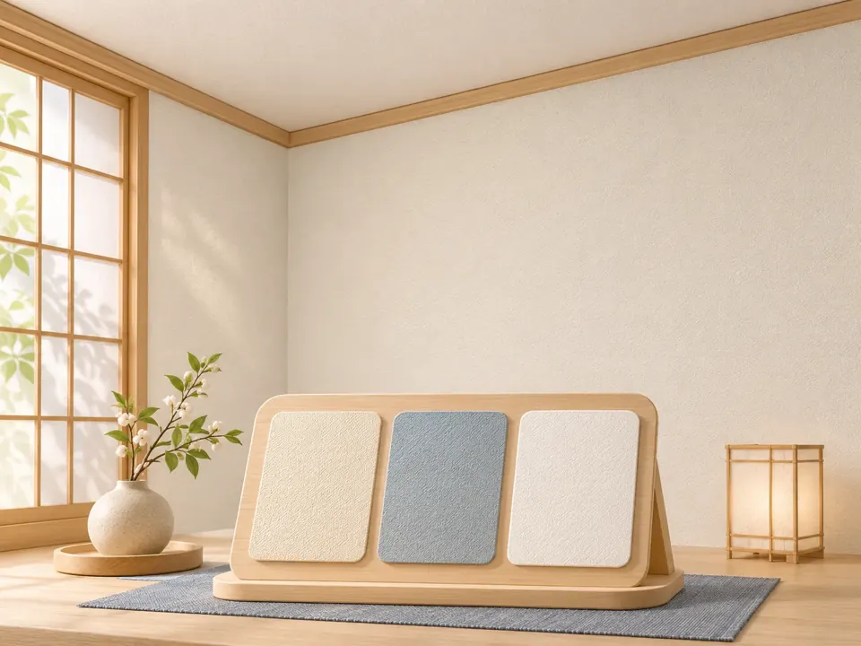
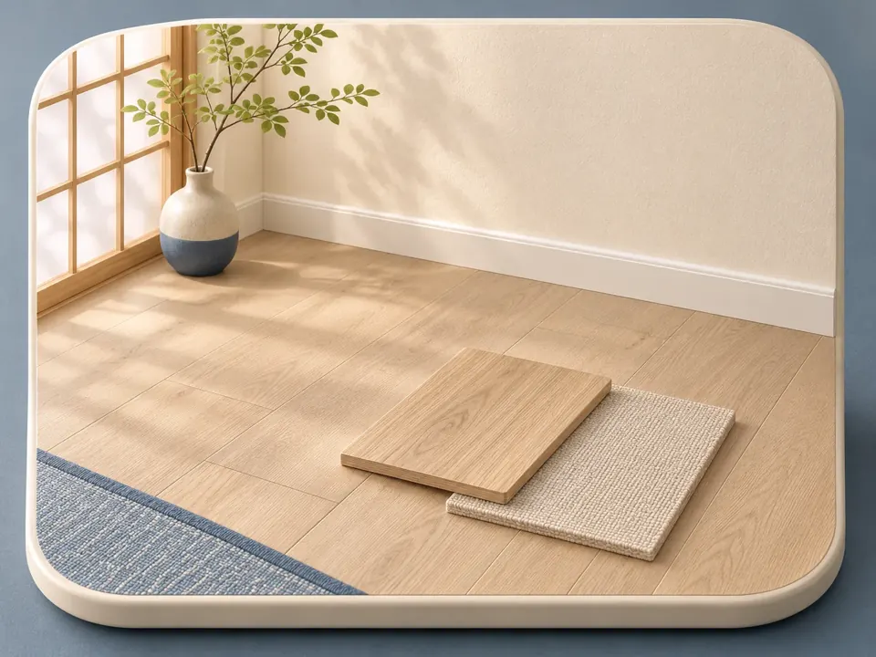
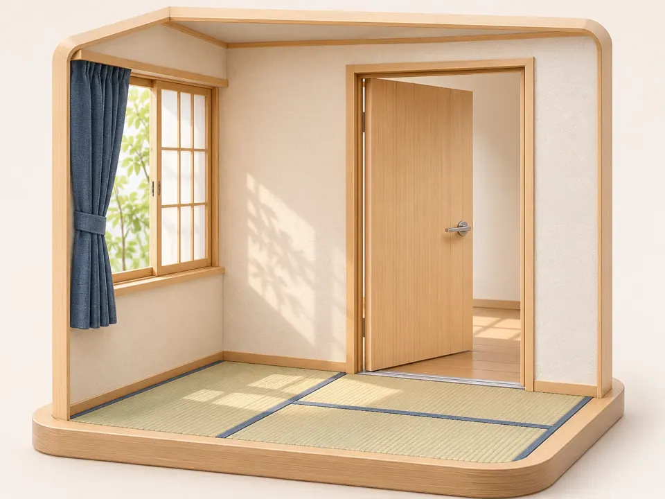

クリーンケアサービス ＞ 内装工事
INTERIOR
清掃だけでは整わない場所も、
まずはご相談ください。
お部屋の傷みや使いづらさが気になるとき。退去後、次に使う方を迎える準備をするとき。内装工事と清掃について、お困りのことからお聞かせください。
工事の可否・範囲・費用・日程は、ご相談内容や現地の状況を確認してからご案内します。
内装について相談する ›清掃サービスを見るどこから手をつけるか、決まっていなくても。
「見た目を整えたい」「傷んだ部分が気になる」「清掃と工事のどちらが必要か分からない」。工事名が分からなくても、今の状態と、どう使いたいかをお伝えください。
- 見た目や傷みが気になる気になる場所の写真と、いつ頃から気になっているかをお知らせください。
- 退去後の部屋を整えたい次に使い始めたい時期と、清掃も含めて相談したい範囲をお知らせください。
- 使い方に合わせて相談したい現在の使い方と、変えたい点をお聞かせください。必要な確認から整理します。
場所ごとに、ご希望をお聞かせください。
壁・床・ドアまわりなど、気になる場所から選んでお伝えください。素材や色の好みが決まっていなくても大丈夫です。

壁・天井汚れや剥がれ、色あせが気になる場所と、明るさや色味のご希望をお知らせください。
床傷やへこみ、きしみ、足ざわりなど、気になる点と使い方をお知らせください。
ドア・建具まわり開け閉めのしづらさや見た目の傷みなど、気になる箇所をお知らせください。
ご相談から、内容を確かめて進めます。
- 1 ご希望をお聞かせください対象の場所、お困りのこと、ご希望の時期を伺います。
- 2 状況と対応範囲を確認写真や現地の状況をもとに、必要な確認や対応できる範囲を整理します。
- 3 費用・日程をご案内工事内容、清掃の範囲、施工担当、費用と日程をご確認いただいてから進めます。
- 4 完了時の確認ご案内した作業内容と仕上がりを確認します。
料金の目安
よくご相談いただく内装の目安です。面積・材料・下地の状態を確かめて、正式にお見積りします。
| メニュー | 内容 | 料金(税込) |
|---|---|---|
| 壁・天井のクロス張り替え | 量産クロスでの張り替え | 1,600 円/㎡〜 |
| クッションフロア | 水まわり・居室の床の張り替え | 4,100 円/㎡〜 |
| フロアタイル | 柄や耐久性を選べる床の仕上げ | 5,800 円/㎡〜 |
| ドア・建具まわり | 傷み・開け閉め・表面の仕上げ | お見積り |
既存材の撤去・下地の補修・家具の移動・廃材の処分は、状態を確かめてお見積りに含めてご案内します。
ご相談前によくある質問
工事するか決めていなくても相談できますか?
お困りの場所とご希望からお聞かせください。工事や清掃の内容を決める前に、必要な確認を整理します。
写真だけで金額が決まりますか?
写真で分かる範囲には限りがあります。下地や設備など現地での確認が必要な場合は、その内容をご案内します。
清掃も一緒に相談できますか?
工事のご希望とあわせて、清掃したい場所もお知らせください。それぞれの範囲と順序を確認します。
賃貸の部屋でも相談できますか?
工事を進める前に、所有者・管理会社の承諾や建物のルールを確かめる必要があります。相談時に賃貸であることをお知らせください。
分かることだけで、相談メモを作れます。
寸法や材料がまだ決まっていなくても大丈夫です。分かる項目だけ選ぶと、お問い合わせに添えるメモができます。この画面からは送信されません。
お問い合わせに添えるメモ
気になる場所を、教えてください。
写真があれば、部屋全体と気になる部分の両方があると伝わりやすくなります。住所・氏名が写った書類や、お顔など、相談に必要のない情報は写さないでください。
メールアプリが開きます。場所・ご希望・連絡先をご入力のうえ、必要な写真を添付して送信してください。
関連:清掃サービス ・ ビル・マンション管理 ・ お問い合わせ